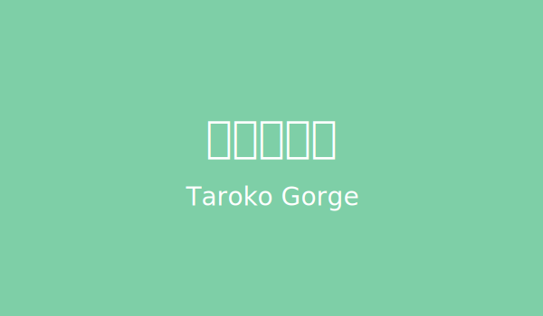

簡介
太魯閣國家公園位於台灣東部，以壯麗的峽谷地形和豐富的自然生態聞名，是台灣最著名的旅遊景點之一。
景點特色
- 壯觀的峽谷與斷崖，感受大自然的鬼斧神工
- 清澈的溪流與壯麗瀑布，如立霧溪、白楊步道水簾洞
- 多樣的動植物生態，擁有台灣特有種如台灣獼猴、藍腹鷴
- 豐富的原住民文化，深入了解太魯閣族的歷史與傳統
- 知名步道健行，如砂卡礑步道、九曲洞步道、長春祠步道
- 壯麗的山岳景觀，包含合歡山、錐麓大斷崖等
- 自然奇觀與地質景觀，欣賞大理石峽谷與特殊岩層
- 四季皆有不同美景，春賞花、夏戲水、秋觀楓、冬賞雪
圖片展示
